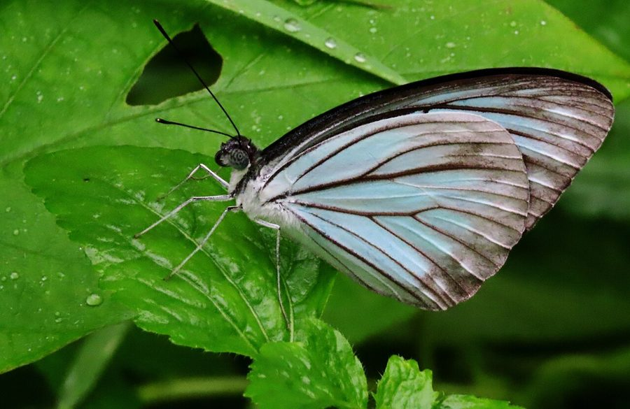

कॉमन वॉन्डरर तितलीCommon Wanderer
Pareronia anais · Pieridae · INS-0121

- Scientific name वैज्ञानिक नाम
- Pareronia anais (Stoll, 1782)
- Family कुल
- Pieridae
- Hindi हिंदी
- कॉमन वॉन्डरर तितली
- Local names स्थानीय नाम
- common wanderer, wanderer
- Status here यहाँ की स्थिति
- native
- Movement आवागमन
- Resident, here all year
- Known from कहाँ दर्ज
- Others have published records from the Basti–Ayodhya districts बस्ती–अयोध्या के ज़िलों से दूसरों के प्रकाशित अभिलेख
- IUCN IUCN
- not evaluated
- Review समीक्षा
- audited and independently read
When to look कब देखें
Present all year. साल भर मौजूद।
Tell it apart from इनसे अलग पहचानें
कॉमन वॉन्डरर तितली / Common Wanderer
Pareronia anais (Stoll, 1782) — Pieridae
कॉमन वॉन्डरर तितली — यह खुली घास की जगहों, खेतों की किनारों और बंजर भूमि पर पाई जाने वाली एक सफेद और गहरे भूरे रंग की तितली है। इसके पंखों पर काली और भूरी धारियाँ और दाग़े होते हैं। यह तितली धीमी उड़ान भरती है और बहुत भटकती फिरती है, जिससे इसका नाम "वॉन्डरर" (भटकने वाली) रखा गया है। यह विभिन्न कपास-परिवार के पौधों पर अंडे देती है।
Quick Identification त्वरित पहचान
| Feature | Description |
|---|---|
| Wingspan | Medium-sized; wingspan 50–65 mm |
| Ground color | White to pale cream |
| Markings | Dark brown or black apex (tip) on forewing; brown bars and streaks on wings |
| Hindwing | White with brown margins |
| Flight | Weak, wandering flight; stays low over grass |
| Antennae | Black with white ring near base |
Field tip: Look for a small white and brown butterfly flying slowly and erratically over open grassland and scrubland. The white base color with dark brown apex on the forewing is distinctive. It rests frequently on low vegetation.
हिंदी — कैसे पहचानें: सफ़ेद पंख जिन पर गहरी भूरी धारियाँ हों, धीमी उड़ान, घास की जगहों पर भटकती फिरती है।
Morphology आकारिकी
Biometrics:
| Measurement | Range |
|---|---|
| Adult wingspan | 50–65 mm |
| Body length | 18–22 mm |
| Forewing length | 22–28 mm |
| Caterpillar length (mature) | 22–26 mm |
Adult butterfly: White or pale cream ground color with dark brown to black markings. Forewing has a dark brown apex and outer margin. Hindwing is white with brown outer margins and occasional brown spots. Sexual dimorphism present; females slightly larger and darker.
Caterpillar: Green, smooth, with a yellowish tint, feeding on cotton-family host plants.
Behaviour & Ecology व्यवहार और पारिस्थितिकी
The Common Wanderer is a slow, meandering flyer that rarely rises high above the grass. It is often seen wandering through open fields and wasteland, moving from flower to flower. Males are territorial to some extent, perching on low vegetation and taking flight to investigate passing butterflies. The species is particularly active in warm, sunny weather and feeds on nectar from a variety of wildflowers.
Life Cycle / Phenology जीवन चक्र
| Stage / Season | Event |
|---|---|
| Egg | Laid on host plant leaves; white or pale; hatches in 4–6 days |
| Larva (caterpillar) | Green, smooth; passes through 4 instars; develops over 14–18 days |
| Pupa | Brown, attached to host plant; emerges in 8–10 days |
| Adult | Emerges throughout warm months; multiple generations per year |
Host Plants or Prey आहार
Larval host plants:
- Cotton family plants (Malvaceae): cotton (Gossypium spp.), mallow species
- Okra (Abelmoschus esculentus)
- Hibiscus species
Adult nectar sources:
- Wildflowers, weeds, and cultivated flowers in open areas
Predators / Natural Enemies शत्रु
- Dragonflies: Particularly effective predators of this slow-flying butterfly
- Spiders: Jumping spiders and grass spiders hunt adults and pupae
- Parasitoid wasps: Attack caterpillars and pupae
- Insectivorous birds: Feed on caterpillars
Agricultural / Human Relevance कृषि प्रासंगिकता
Pollinator service. The Common Wanderer visits a variety of wildflowers and weeds in agricultural landscapes, providing pollination services.
Grassland indicator. Its presence indicates open grassland and wasteland habitats with adequate flowering vegetation.
Expected Locally स्थानीय रूप से अपेक्षित
Not a field record. Written from published accounts for eastern Uttar Pradesh. No confirmed local sighting yet — if you have seen it, that is what the atlas needs.
अभी तक स्थानीय पुष्टि नहीं। यह विवरण प्रकाशित स्रोतों से है, किसी अवलोकन से नहीं।
The species is expected year-round throughout the Basti district in open grasslands, field margins, and wastelands. Look for it in warm, sunny afternoons, flying low and slowly over grass and weeds. A photograph showing the distinctive white coloring with dark brown markings, taken with date and location, would confirm a local record.
Distribution वितरण
Global range: Tropical Africa, South Asia, and Southeast Asia.
In India: Widely distributed throughout the peninsula and Gangetic plains.
In Uttar Pradesh: Present in grassland and agricultural areas throughout the state.
In Basti district / eastern UP: Expected in open habitats year-round.
Research Questions शोध प्रश्न
Anyone can investigate these | कोई भी इन प्रश्नों की जाँच कर सकता है
- How much time does a Common Wanderer butterfly spend at each flower before moving to the next? — Record foraging behaviour at specific flowers.
- Which wildflower species in Basti district attract the most Common Wanderer butterflies? — Monitor flowers in open areas over a season.
- Do Common Wanderers show any preference for cotton, okra, or hibiscus as a host plant? / क्या कॉमन वॉन्डरर को कपास, भिंडी या गुड़हल पसंद है? — Observe egg-laying on different host plants.
- How many generations of Common Wanderer occur in one year in Basti? — Track emergence dates throughout the season.
- Do dragonflies catch more Common Wanderers than other butterfly species? — Observe predation events.
Similar Species मिलती-जुलती प्रजातियाँ
| Species | How to tell apart | हिंदी | |
|---|---|---|---|
| [[common_emigrant\ | Common Emigrant]] (Catopsilia pomona) | Larger; stronger flight; more yellow coloration; hindwing lacks brown margins | सामान्य प्रवासी — बड़ा, पीला, मजबूत उड़ान |
| [[pioneer\ | Pioneer]] (Belenois aurota) | Forewing apex black with white patch; hindwing white and unblemished | अग्रदूत — सफ़ेद पंख, काली चोटी पर सफ़ेद पैच |
Field rule: A small white and brown butterfly with weak, wandering flight, staying low over grassland, with dark brown apex on forewing is the Common Wanderer.
Taxonomy & Classification वर्गीकरण
Original description. Described by Stoll in 1782 from specimens in the East Indies. The genus Pareronia was established for these characteristic brown-and-white pierid butterflies.
Subspecies. The nominate subspecies P. a. anais occurs throughout the Indian subcontinent and Southeast Asia.
Family and order placement. Order Lepidoptera, family Pieridae (whites and yellows).
Phylogenetic notes. Pareronia is a small genus of Afro-Asian pierid butterflies, characterized by the combination of white ground color and dark brown patterning.
IUCN status rationale. Not evaluated. Common and widespread with stable populations.
Photo Gallery फोटो गैलरी
No photos yet — add field photos to media/species/common_wanderer/ and run node scripts/sync_photos.js.
Photos needed आवश्यक फोटो
- [ ] Adult on grass (घास पर)
- [ ] Wings open showing apex markings (खुले पंख)
- [ ] Caterpillar on host plant (इल्ली)
References संदर्भ
- Stoll, C. (1782). Pièces intéressantes servante de suite et de complément à l'histoire naturelle des chenilles. Zurich. [original description]
- Bingham, C.T. (1905). The Fauna of British India, including Ceylon and Burma. Butterflies. Vol. 1. Taylor & Francis, London.
- Kehimkar, I. (2008). The Book of Indian Butterflies. Bombay Natural History Society, Mumbai.
- Kunte, K. (2000). Butterflies of Peninsular India. Universities Press, Hyderabad.
- Zoological Survey of India (2010). Fauna of Eastern Uttar Pradesh.
- GBIF Occurrence Data — Pareronia anais, India (2010–2025).
Source file: species/fauna/insects/common_wanderer.md